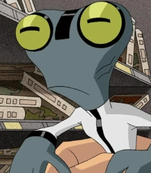
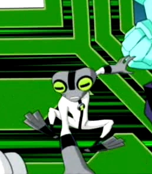

Massa Cinzenta
Galvaniano
Massa Cinzenta é um alienígena de pele cinza, e semelhante a um sapo humanoide. Tem quinze centímetros de altura, e usa uma roupa branca com uma faixa preta passando pelo seu corpo. Seus olhos são verdes e suas pupilas são retangulares, pretas.
Habilidades
Superinteligência
A habilidade mais notável dos Galvanianos é sua superinteligência, tendo eles conhecimento de qualquer matéria em nível avançado.
Visão microscópica
Suas pupilas horizontais são responsáveis por dá-los uma visão microscópica.

aparencia no Classico

aparencia no Força Alienigena e Supremacia

aparencia no omnivserse